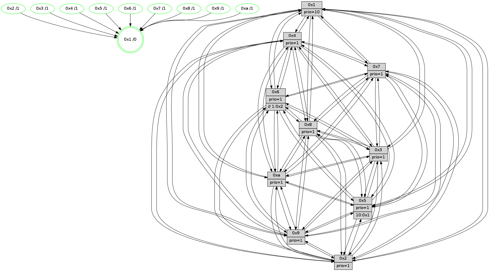

>> << IDX [start] -100 -25 -5 +0 +5 +25 +100 [1460.04716301]
 Previous packets
----------------------------------------------------------------------
1455.318372 beacon01(faad) #0 coord=01,02,03,04,05,06,07,0a,09,08 cycle=688.0ms assoc
-- color-indic=1 64 d9 39
1455.328355 beacon02(faad) #0 coord=01,02,03,04,05,06,07,0a,09,08 cycle=688.0ms assoc 64 4a 08
1455.338354 beacon03(faad) #0 coord=01,02,03,04,05,06,07,0a,09,08 cycle=688.0ms assoc 64 30 45
1455.348355 beacon04(faad) #0 coord=01,02,03,04,05,06,07,0a,09,08 cycle=688.0ms assoc 64 47 af
1455.358355 beacon05(faad) #0 coord=01,02,03,04,05,06,07,0a,09,08 cycle=688.0ms assoc 64 3d e2
1455.368355 beacon06(faad) #0 coord=01,02,03,04,05,06,07,0a,09,08 cycle=688.0ms assoc 64 b3 35
1455.378355 beacon07(faad) #0 coord=01,02,03,04,05,06,07,0a,09,08 cycle=688.0ms assoc 64 c9 78
1455.388359 beacon0a(faad) #0 coord=01,02,03,04,05,06,07,0a,09,08 cycle=688.0ms assoc 64 b8 73
1455.408362 beacon08(faad) #0 coord=01,02,03,04,05,06,07,0a,09,08 cycle=688.0ms assoc 64 4c e9
1455.421175 [Hello(1): seq=837 sym=4,2,9,5,10,3,8,6,7 sysInfo=coloring-mode-on,ColoringModeRequestCalled stat=4:12,14,0,4/2:0,7,10,6/9:9,4,11,2/5:13,0,14,10/10:1,10,14,8/3:7,5,15,11/8:8,8,11,4/6:5,0,11,2/7:7,8,2,2]
1455.423909 [Hello(2): seq=924 sym=4,5,7,6,3,9,8,10,1 sysInfo=hasWarning stat=4:13,5,15,14/5:9,1,5,3/7:11,4,1,2/6:6,13,4,1/3:11,6,5,1/9:10,0,10,10/8:10,3,10,13/10:9,8,12,11/1:7,15,11,0]
1455.426590 [Color(9) seq=487 @0:0 prio=1]
1455.427843 [Color(2) seq=504 @0:0 prio=1]
1455.429145 [Hello(5): seq=928 sym=7,4,3,1,9,8,10,2 sysInfo=hasWarning stat=7:10,9,4,1/4:2,14,12,0/3:5,11,1,3/1:13,4,8,0/9:15,12,2,11/8:14,7,11,5/10:11,14,9,9/2:9,9,14,8]
1455.431478 [Hello(3): seq=928 sym=1,7,6,2,4,8,9,10,5 sysInfo=hasWarning stat=1:13,10,4,0/7:11,2,3,15/6:5,6,8,3/2:2,3,0,0/4:4,10,6,14/8:5,3,11,6/9:9,14,13,1/10:8,7,3,5/5:0,6,2,2]
1455.434001 [STC(1) #0.254 tree-change,inconsistent-stability,stable,to-color d=0]
1455.436436 [Color(5) seq=464 @0:0 prio=1 >10.@1,1.@2,1.@3,1.@4]
1455.438874 [Color(10) seq=517 @0:0 prio=1]
1455.441135 [Color(3) seq=557 @0:0 prio=1]
1455.442516 [Hello(6): seq=928 sym=3,2,5,4,7,9,8,10,1 sysInfo=hasWarning stat=3:8,3,7,0/2:1,2,0,0/5:14,12,10,5/4:15,2,15,9/7:6,5,11,0/9:15,14,1,11/8:14,12,6,7/10:0,7,11,13/1:0,0,0,1]
1455.446946 [Color(6) seq=560 @0:0 prio=1 >>1.@2,1.@3,1.@4]
----------------------------------------------------------------------
1456.106503 beacon01(faad) #0 coord=01,02,03,04,05,06,07,0a,09,08 cycle=688.0ms assoc
-- color-indic=1 64 65 3c
1456.116485 beacon02(faad) #0 coord=01,02,03,04,05,06,07,0a,09,08 cycle=688.0ms assoc 64 f6 0d
1456.126485 beacon03(faad) #0 coord=01,02,03,04,05,06,07,0a,09,08 cycle=688.0ms assoc 64 8c 40
1456.136487 beacon04(faad) #0 coord=01,02,03,04,05,06,07,0a,09,08 cycle=688.0ms assoc 64 fb aa
1456.146486 beacon05(faad) #0 coord=01,02,03,04,05,06,07,0a,09,08 cycle=688.0ms assoc 64 81 e7
1456.156488 beacon06(faad) #0 coord=01,02,03,04,05,06,07,0a,09,08 cycle=688.0ms assoc 64 0f 30
1456.166487 beacon07(faad) #0 coord=01,02,03,04,05,06,07,0a,09,08 cycle=688.0ms assoc 64 75 7d
1456.176491 beacon0a(faad) #0 coord=01,02,03,04,05,06,07,0a,09,08 cycle=688.0ms assoc 64 04 76
1456.196492 beacon08(faad) #0 coord=01,02,03,04,05,06,07,0a,09,08 cycle=688.0ms assoc 64 f0 ec
1456.208093 [STC(2)->1 #0.254 tree-change,inconsistent-stability,stable,to-color d=1]
1456.209957 [Hello(10): seq=861 sym=6,2,3,8,7,5,9,4,1 sysInfo=hasWarning stat=6:1,6,6,5/2:12,15,9,1/3:2,1,0,15/8:9,2,7,4/7:0,9,5,10/5:8,2,2,2/9:13,0,6,1/4:6,0,2,3/1:1,11,13,1]
1456.212682 [Hello(7): seq=928 sym=2,3,5,6,4,8,9,10,1 sysInfo=hasWarning stat=2:8,10,15,5/3:0,1,1,4/5:0,3,2,4/6:1,14,15,12/4:14,1,12,2/8:8,15,3,0/9:10,0,13,2/10:13,15,7,7/1:7,6,12,0]
1456.216646 [Hello(4): seq=928 sym=5,8,6,2,3,9,7,10,1 sysInfo= stat=5:11,2,14,3/8:1,4,2,0/6:4,11,8,1/2:0,12,0,2/3:1,7,8,15/9:5,0,3,2/7:1,4,0,0/10:9,7,9,14/1:9,11,1,1]
1456.219434 [Hello(9): seq=872 sym=2,5,3,4,7,6,8,10,1 sysInfo=hasWarning stat=2:4,15,6,12/5:6,5,6,9/3:0,2,2,5/4:14,13,14,3/7:11,6,13,5/6:3,3,4,0/8:12,6,13,7/10:1,2,0,0/1:1,10,0,1]
1456.222792 [STC(4)->1 #0.254 tree-change,inconsistent-stability,stable,to-color d=1]
1456.224163 [STC(9)->1 #0.254 tree-change,inconsistent-stability,stable,to-color d=1]
1456.225840 [Hello(8): seq=872 sym=5,2,3,7,9,6,4,10,1 sysInfo=hasWarning stat=5:12,6,12,2/2:3,4,6,13/3:13,5,11,4/7:2,7,0,0/9:4,7,13,5/6:4,4,6,0/4:2,2,6,2/10:7,7,4,5/1:15,1,1,0]
1456.230906 [STC(8)->1 #0.254 tree-change,inconsistent-stability,stable,to-color d=1]
1456.234801 [TreeStatus(8)-.->1 #0.254 tree-change,inconsistent-stability,stable child=1]
1456.237283 [Color(8) seq=527 @0:0 prio=1]
1456.242175 [STC(7)->1 #0.254 tree-change,inconsistent-stability,stable,to-color d=1]
1456.244457 [Color(7) seq=456 @0:0 prio=1]
----------------------------------------------------------------------
1456.894637 beacon01(faad) #0 coord=01,02,03,04,05,06,07,0a,09,08 cycle=688.0ms assoc
-- color-indic=1 64 a1 32
1456.904618 beacon02(faad) #0 coord=01,02,03,04,05,06,07,0a,09,08 cycle=688.0ms assoc 64 32 03
1456.914619 beacon03(faad) #0 coord=01,02,03,04,05,06,07,0a,09,08 cycle=688.0ms assoc 64 48 4e
1456.924619 beacon04(faad) #0 coord=01,02,03,04,05,06,07,0a,09,08 cycle=688.0ms assoc 64 3f a4
1456.934621 beacon05(faad) #0 coord=01,02,03,04,05,06,07,0a,09,08 cycle=688.0ms assoc 64 45 e9
1456.944621 beacon06(faad) #0 coord=01,02,03,04,05,06,07,0a,09,08 cycle=688.0ms assoc 64 cb 3e
1456.954622 beacon07(faad) #0 coord=01,02,03,04,05,06,07,0a,09,08 cycle=688.0ms assoc 64 b1 73
1456.964624 beacon0a(faad) #0 coord=01,02,03,04,05,06,07,0a,09,08 cycle=688.0ms assoc 64 c0 78
1456.984625 beacon08(faad) #0 coord=01,02,03,04,05,06,07,0a,09,08 cycle=688.0ms assoc 64 34 e2
1456.997801 [Hello(1): seq=838 sym=4,2,9,5,10,3,8,6,7 sysInfo=coloring-mode-on,ColoringModeRequestCalled stat=4:12,14,0,4/2:0,7,11,6/9:9,4,11,2/5:13,1,14,10/10:2,11,14,8/3:7,6,15,11/8:8,9,12,5/6:6,1,11,2/7:7,9,3,2]
1457.000517 [Color(10) seq=518 @0:0 prio=1]
1457.003211 [Hello(2): seq=925 sym=4,5,7,6,3,9,8,10,1 sysInfo=hasWarning stat=4:14,6,0,14/5:10,2,5,3/7:12,5,2,2/6:7,14,4,1/3:12,7,5,1/9:11,0,11,10/8:11,4,11,14/10:10,9,12,11/1:8,15,12,0]
1457.005901 [Hello(6): seq=929 sym=3,2,5,4,7,9,8,10,1 sysInfo=hasWarning stat=3:8,3,7,0/2:1,2,1,0/5:14,12,10,5/4:0,2,0,9/7:7,6,12,0/9:0,14,2,11/8:15,13,7,8/10:1,7,11,13/1:1,1,0,1]
1457.008759 [Color(5) seq=465 @0:0 prio=1 >10.@1,1.@2,1.@3,1.@4]
1457.010655 [Color(6) seq=561 @0:0 prio=1 >>1.@2,1.@3,1.@4]
1457.013085 [Color(9) seq=488 @0:0 prio=1]
1457.014356 [Hello(3): seq=929 sym=1,7,6,2,4,8,9,10,5 sysInfo=hasWarning stat=1:14,11,4,0/7:12,3,4,15/6:6,7,8,3/2:2,3,1,0/4:5,10,7,14/8:6,4,12,7/9:10,14,14,1/10:9,7,3,5/5:0,6,2,2]
1457.019409 [Color(3) seq=558 @0:0 prio=1]
1457.023190 [Color(2) seq=505 @0:0 prio=1]
----------------------------------------------------------------------
1457.682769 beacon01(faad) #0 coord=01,02,03,04,05,06,07,0a,09,08 cycle=688.0ms assoc
-- color-indic=1 64 1d 37
1457.692751 beacon02(faad) #0 coord=01,02,03,04,05,06,07,0a,09,08 cycle=688.0ms assoc 64 8e 06
1457.702751 beacon03(faad) #0 coord=01,02,03,04,05,06,07,0a,09,08 cycle=688.0ms assoc 64 f4 4b
1457.712753 beacon04(faad) #0 coord=01,02,03,04,05,06,07,0a,09,08 cycle=688.0ms assoc 64 83 a1
1457.722753 beacon05(faad) #0 coord=01,02,03,04,05,06,07,0a,09,08 cycle=688.0ms assoc 64 f9 ec
1457.732752 beacon06(faad) #0 coord=01,02,03,04,05,06,07,0a,09,08 cycle=688.0ms assoc 64 77 3b
1457.742753 beacon07(faad) #0 coord=01,02,03,04,05,06,07,0a,09,08 cycle=688.0ms assoc 64 0d 76
1457.752756 beacon0a(faad) #0 coord=01,02,03,04,05,06,07,0a,09,08 cycle=688.0ms assoc 64 7c 7d
1457.772757 beacon08(faad) #0 coord=01,02,03,04,05,06,07,0a,09,08 cycle=688.0ms assoc 64 88 e7
1457.785575 [Hello(10): seq=862 sym=6,2,3,8,7,5,9,4,1 sysInfo=hasWarning stat=6:2,7,6,5/2:13,0,9,1/3:3,2,0,15/8:10,3,8,5/7:1,10,6,10/5:8,3,2,2/9:14,1,7,1/4:7,0,3,3/1:2,12,13,1]
1457.788218 [Hello(9): seq=873 sym=2,5,3,4,7,6,8,10,1 sysInfo=hasWarning stat=2:4,0,6,12/5:6,5,6,9/3:1,3,2,5/4:14,14,14,3/7:11,7,14,5/6:3,3,4,0/8:13,7,14,8/10:1,2,0,0/1:2,10,0,1]
1457.792281 [Color(1) seq=609 @0:0 prio=10]
1457.793905 [Hello(8): seq=873 sym=5,2,3,7,9,6,4,10,1 sysInfo=hasWarning stat=5:12,7,12,2/2:4,5,7,13/3:14,6,11,4/7:2,8,1,0/9:4,8,13,5/6:5,5,6,0/4:2,2,6,2/10:8,8,4,5/1:0,1,1,0]
1457.797916 [Hello(4): seq=929 sym=5,8,6,2,3,9,7,10,1 sysInfo= stat=5:11,3,14,3/8:1,5,3,1/6:5,12,8,1/2:1,13,1,2/3:2,8,8,15/9:5,1,3,2/7:1,5,1,0/10:10,8,9,14/1:10,11,1,1]
1457.800364 [Color(8) seq=528 @0:0 prio=1]
1457.802132 [Color(4) seq=468 @0:0 prio=1]
1457.808221 [Hello(7): seq=929 sym=2,3,5,6,4,8,9,10,1 sysInfo=hasWarning stat=2:9,11,0,5/3:1,2,1,4/5:0,4,2,4/6:2,15,15,12/4:14,1,12,2/8:8,15,3,0/9:10,1,13,2/10:14,0,7,7/1:8,6,12,0]
1457.811677 [Color(7) seq=457 @0:0 prio=1]
----------------------------------------------------------------------
1458.470902 beacon01(faad) #0 coord=01,02,03,04,05,06,07,0a,09,08 cycle=688.0ms assoc
-- color-indic=1 64 29 2f
1458.480885 beacon02(faad) #0 coord=01,02,03,04,05,06,07,0a,09,08 cycle=688.0ms assoc 64 ba 1e
1458.490883 beacon03(faad) #0 coord=01,02,03,04,05,06,07,0a,09,08 cycle=688.0ms assoc 64 c0 53
1458.500885 beacon04(faad) #0 coord=01,02,03,04,05,06,07,0a,09,08 cycle=688.0ms assoc 64 b7 b9
1458.510883 beacon05(faad) #0 coord=01,02,03,04,05,06,07,0a,09,08 cycle=688.0ms assoc 64 cd f4
1458.520885 beacon06(faad) #0 coord=01,02,03,04,05,06,07,0a,09,08 cycle=688.0ms assoc 64 43 23
1458.530884 beacon07(faad) #0 coord=01,02,03,04,05,06,07,0a,09,08 cycle=688.0ms assoc 64 39 6e
1458.540891 beacon0a(faad) #0 coord=01,02,03,04,05,06,07,0a,09,08 cycle=688.0ms assoc 64 48 65
1458.560889 beacon08(faad) #0 coord=01,02,03,04,05,06,07,0a,09,08 cycle=688.0ms assoc 64 bc ff
1458.572155 [Hello(1): seq=839 sym=4,2,9,5,10,3,8,6,7 sysInfo=coloring-mode-on,ColoringModeRequestCalled stat=4:13,15,0,4/2:1,8,11,6/9:9,5,11,2/5:13,2,14,10/10:3,12,14,8/3:8,7,15,11/8:9,10,12,5/6:7,2,11,2/7:8,10,3,2]
1458.576037 [Hello(5): seq=930 sym=7,6,4,3,1,9,8,10,2 sym= sysInfo=hasWarning stat=]
1458.579174 [Color(5) seq=466 @0:0 prio=1 >10.@1,1.@2,1.@3,1.@4]
1458.581259 [Color(9) seq=489 @0:0 prio=1]
1458.582731 [Hello(6): seq=930 sym=3,2,5,4,7,9,8,10,1 sysInfo=hasWarning stat=3:9,4,7,0/2:1,3,1,0/5:14,12,10,5/4:1,3,0,9/7:8,7,12,0/9:1,15,2,11/8:0,13,7,8/10:2,7,11,13/1:2,2,0,1]
1458.586189 [Hello(3): seq=930 sym=1,7,6,2,4,8,9,10,5 sysInfo=hasWarning stat=1:15,12,4,0/7:13,4,4,15/6:6,7,8,3/2:2,4,1,0/4:6,11,7,14/8:7,4,12,7/9:11,14,14,1/10:10,7,3,5/5:0,6,2,2]
1458.589079 [Color(10) seq=519 @0:0 prio=1]
1458.592004 [Color(3) seq=559 @0:0 prio=1]
1458.594967 [Hello(2): seq=926 sym=4,5,7,6,3,9,8,10,1 sysInfo=hasWarning stat=4:15,7,0,14/5:10,2,5,3/7:13,6,2,2/6:7,14,4,1/3:12,7,5,1/9:12,0,11,10/8:12,4,11,14/10:11,9,12,11/1:9,0,12,0]
1458.598615 [Color(6) seq=562 @0:0 prio=1 >>1.@2,1.@3,1.@4]
1458.601128 [Color(2) seq=506 @0:0 prio=1]
----------------------------------------------------------------------
1459.259032 beacon01(faad) #0 coord=01,02,03,04,05,06,07,0a,09,08 cycle=688.0ms assoc
-- color-indic=1 64 95 2a
1459.269014 beacon02(faad) #0 coord=01,02,03,04,05,06,07,0a,09,08 cycle=688.0ms assoc 64 06 1b
1459.279015 beacon03(faad) #0 coord=01,02,03,04,05,06,07,0a,09,08 cycle=688.0ms assoc 64 7c 56
1459.289016 beacon04(faad) #0 coord=01,02,03,04,05,06,07,0a,09,08 cycle=688.0ms assoc 64 0b bc
1459.299015 beacon05(faad) #0 coord=01,02,03,04,05,06,07,0a,09,08 cycle=688.0ms assoc 64 71 f1
1459.309016 beacon06(faad) #0 coord=01,02,03,04,05,06,07,0a,09,08 cycle=688.0ms assoc 64 ff 26
1459.319017 beacon07(faad) #0 coord=01,02,03,04,05,06,07,0a,09,08 cycle=688.0ms assoc 64 85 6b
1459.329021 beacon0a(faad) #0 coord=01,02,03,04,05,06,07,0a,09,08 cycle=688.0ms assoc 64 f4 60
1459.349021 beacon08(faad) #0 coord=01,02,03,04,05,06,07,0a,09,08 cycle=688.0ms assoc 64 00 fa
1459.360855 [Hello(10): seq=863 sym=6,2,3,8,7,5,9,4,1 sysInfo=hasWarning stat=6:2,8,6,5/2:14,1,9,1/3:3,3,0,15/8:11,3,8,5/7:2,11,6,10/5:8,3,2,2/9:15,1,7,1/4:8,1,3,3/1:3,13,13,1]
1459.363904 [Hello(9): seq=874 sym=2,5,3,4,7,6,8,10,1 sysInfo=hasWarning stat=2:5,1,6,12/5:6,5,6,9/3:2,4,2,5/4:15,15,14,3/7:12,8,14,5/6:4,4,4,0/8:14,7,14,8/10:1,3,0,0/1:3,11,0,1]
1459.367873 [STC(1) #0.255 tree-change,inconsistent-stability,stable,to-color d=0]
1459.369640 [Hello(8): seq=874 sym=5,2,3,7,9,6,4,10,1 sysInfo=hasWarning stat=5:13,8,12,2/2:5,6,7,13/3:15,7,11,4/7:3,9,1,0/9:4,9,13,5/6:6,6,6,0/4:2,3,6,2/10:9,9,4,5/1:1,1,1,0]
1459.372204 [Color(1) seq=610 @0:0 prio=10]
1459.373620 [Hello(7): seq=930 sym=2,3,5,6,4,8,9,10,1 sysInfo=hasWarning stat=2:10,12,0,5/3:2,3,1,4/5:1,5,2,4/6:3,0,15,12/4:14,1,12,2/8:8,15,3,0/9:10,2,13,2/10:15,1,7,7/1:9,6,12,0]
1459.378052 [Color(8) seq=529 @0:0 prio=1]
1459.381996 [Color(7) seq=458 @0:0 prio=1]
1459.386566 [Color(4) seq=469 @0:0 prio=1]